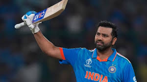

M S DHONI
M.S. Dhoni is an Indian cricketer whose rise to prominence in the early 21st century culminated in his captaincy of the Indian national team that won the one-day Cricket World Cup in 2011. Dhoni made his international debut in 2004

ROHIT SHARMA
Rohit Sharma is the captain of the Indian team in limited-overs formats and the vice-captain in Test cricket. Sharma is a right-handed batsman, right-arm off-break bowler. He is also the captain of Mumbai Indians team in the Indian Premier League.

VIRAT KHOLI
Virat Kohli is an Indian international cricketer who plays Test and One Day International cricket for the Indian national team. A former captain in all formats, Kohli retired from Twenty20 International following India's win at the 2024 T20 World Cup.